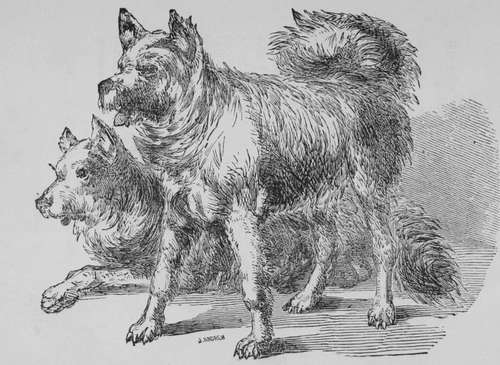

Arctic Sled Dog
Description
This section is from the book "Breeding, Training, Management, Diseases Of Dogs", by Francis Butler. Also available from Amazon: Breeding, training, management, diseases.
Arctic Sled Dog
A noted member of the frigid zone, Hardy and tough, adapted to his home, To him the traits of horse and hound belong ; His feats the theme of many a polar song. Of wolfish form, yet somewhat stouter grown. The sled dog, solo in Arctic regions known ; With stiffened ear erect, keen prowling eye, Sharp pointed nose, and coat of varied dye 5 His dress compounded of a woolly wire, Defying cold, disdaining sun or fire : In vigor strong, to hardship e'er inured, From pampered taste and indolence secured ; Of lasting foot, with firm and nervous tread, Unwearied drags the cumbrous Lapland sled. Or lightly bounding with the travelers' sleigh, With gladsome trip, makes seventy miles a day. Parry, McClintock, Belcher, Ross and Kane, With thankful lip, record his memoried name; O'er Greenland snows and ice of Baffin's bay, Hungry and gaunt, lie led the trackless way. For ever barred the sweets of home to taste, Triumphant sped them through the frigid waste. O'er the brave Franklin, raise one grateful sigh !
His faithful dog lies bleached and withered by.
Dipping in salt water, three times following, each time keeping the patient under till he is nearly exhausted, ha3 been thought to take such an effect on the system, as to annihilate the venomous power. True, 1 remember a case in England, where two clogs were bitten by a mad dog, within five minutes of each other. One was a Pointer, owned by a great sportsman of my acquaintance, who immediately drove twelve miles to the salt water, and there plunged his favorite almost to death. The other dog remained unnoticed and unattended to. In a few days after, the neglected animal went raving mad and committed fearful ravages, whilst the Pointer never portrayed the most remote symptom of Hydrophobia, during the remaining years of his life. I have also seen various persons at Southampton, almost ducked to death, to avoid the consequence of the bites of mad dogs, and this was considered an all sufficient safeguard. But 1 am rather slow at hasty inferences, especially on the subject of mad dogs. With regard to the fact of the Pointer mentioned, his system might not have been as susceptible of absorbing the virus as that of his unlucky neighbor, neither might he have been as severely bitten, and as it is well known that all dogs will not be affected by bites of rabid animals, the Pointer might have belonged to the class of non-absorbents. With regard to the persons alluded to, they might have been bitten either by an imaginary mad dog, or by one whose nervous system alone was under temporary derangement.
Arctic Sled Dog
The bites of really mad animals differ widely in their poisoning powers, and in many cases 1 imagine the danger would be very trifling. The venom issuing from a really corrupt system must differ widely in virulence from that produced by simple nervous excitement. I have often been bitten by dogs, laboring un-der temporary derangement and mad to all intents and purposes (if animals unconscious of their acts may be termed insane.) and I certainly have never felt any fear and but little incouvenience from it. But the Lite of a really rabid animal, who has had the disease festering his whole frame, is at all times to be dreaded. Neither the Fits in Distemper, nor ordinary Fits should be mistaken for Hydrophobia. They bear but little resemblance to it. Fits, in rabid animals are preceded by different premonitory symptoms, and are generally the sequel of a train of incoherent, extraordinary and unreasonable performances. In all fits, however, the animal should be handled very cautiously, as his unconsciousness may result in inflicting injury, where none was intended, and bites are at all times more or less poisonous. A person bitten by a mad dog should have the wounded parts immediately taken out by a skilful surgeon, and the sore should be afterwards thoroughly burnt out with lunar caustic. I would also recommend the application of a dozen leeches to the neighboring parts, and a soft poultice to encourage the flow of blood to a limited extent, whilst a bandage be tied above the wound, to lessen the circulation, till the operation be terminated. Cooling aperient medicines cannot be amiss ; the treatment however should be regulated through the advice of a skilful practitioner.
From what I have seen and heard, I have pome little faith in salt water ducking, and would certainly try it, as it would not be likely to do any injury. Do not wait for a Doctor to cut out the bite, if he be far off, and you have judgment enough to operate, without cutting an artery, or risking danger in the loss of blood. Time is every thing, and if attended to early, there is very little fear of danger even from the most venomous bite. Many foolish people imagine that if a healthy dog bite a person and the animal should at any after time become rabid, that the individual may on that account become the subject of Hydrophobia. This must be all moonshine. By the same method of reasoning, should the person with whom I associate in New York, die of the yellow fever in New Orleans, I must also fall a victim to it. How many faithful animals have been sacrificed, through this nonsensical idea! Certainly it were better for a dog to suffer death, than that the nerves of any human being should be continually agitated even by such peurile humdrum, yet it is high time that reasoning minds should avoid conclusions, where there is no connection between cause and effect. Hydrophobia signifies a dread of water ; but it is no proof of canine madness that a dog should refuse to drink, neither is it a test of his sanity, should he drink to the full. In a certain stage of Hydrophobia, where the head is the most affected, anything glistening causes the unconscious animal to start and vary his course. When kept in the dark, or with little light, the rabid animal will generally keep secluded and still ; therefore in all cases of affection of the brain, he should be kept as much as possible from the light. Mad dogs when not excited by glaring objects often drink freely to assuage the fever raging within, but in their flighty paroxysms they shun all dazzling objects which Hash on their disordered vision.
Continue to:
- prev: Esquimaux Dog
- Table of Contents
- next: Shepherd Dog